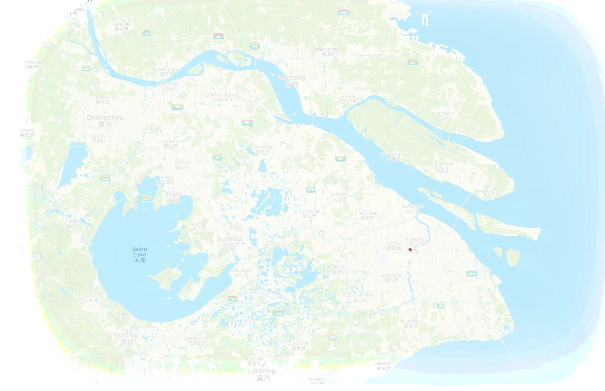
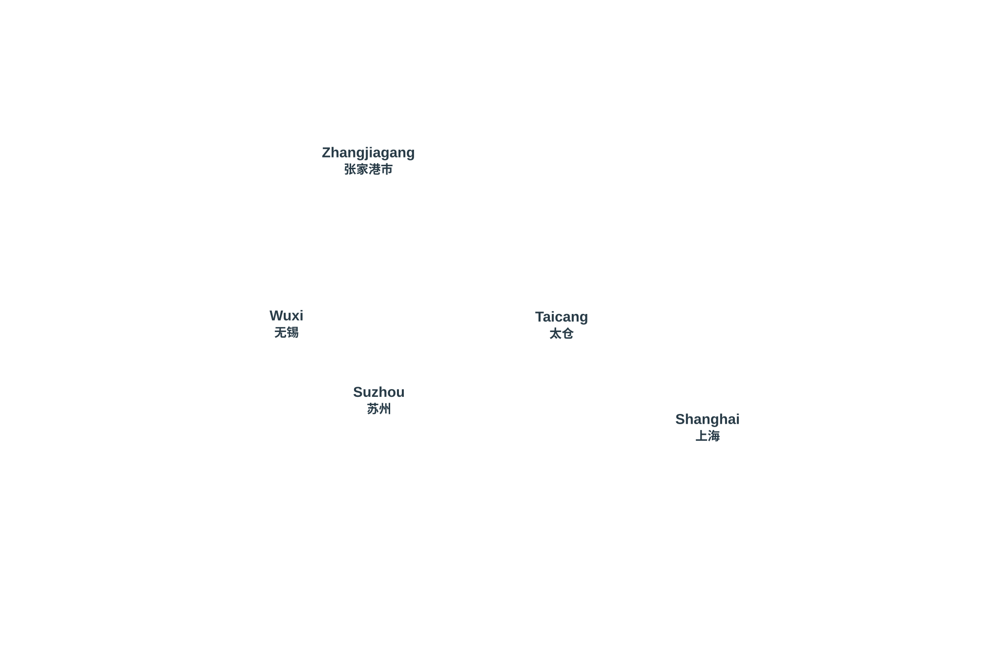

MDHI fabricates structural steel for buildings, infrastructure and industrial projects, with detailing, fabrication, coatings and assembly supported by port-oriented delivery.
Location169 Longjiang Road, Taicang Port Development Zone, Taicang
LogisticsTaicang Port access for domestic and international project delivery.
MMEC brings structural fabrication, module assembly and logistics together, supporting project requirements from workshop fabrication to port load-out.
MEEM manufactures HRSG pressure parts and air-cooled heat exchanger equipment for power and process applications, with packaging and delivery coordinated for each project.
Our manufacturing companies are based in Taicang and Zhangjiagang, with access to river ports and inland transport. Our Shanghai engineering center supports engineering and commercial coordination.
Sites & transport


Approx.
0
FactoriesShanghai officePortsAirportsRail
Approximate straight-line scale, calibrated from airport landmarks. Not for navigation or road-distance measurement. Reference distances remain in the location panel.
View all location names and addresses
MMEC
Modern Modular Engineering & Construction (Suzhou) Co., Ltd.
玛顿模块化工程制造（苏州）有限公司
2669 Yanjiang Rd., Daxin Town, Zhangjiagang
Structural steel and modular plants. Reference distances — Pudong Airport (PVG): 230 km; Gangxin Heavy Equipment Terminal: 1 km; Zhangjiagang Railway Station: 30 km.
MEEM
Modern Energy Equipment Manufacturing Co., Ltd.
玛顿能源装备制造（苏州）有限公司
1 Duanshan Rd., Deji Subdistrict, Zhangjiagang
HRSG pressure parts and air-cooled heat exchangers. Reference distances — Pudong Airport (PVG): 230 km; Gangxin Heavy Equipment Terminal: 2 km; Zhangjiagang Railway Station: 30 km.
MDHI
Modern Heavy Industries (Taicang) Co., Ltd.
玛顿重工（太仓）有限公司
169 Longjiang Rd., Taicang Port Development Zone, Taicang